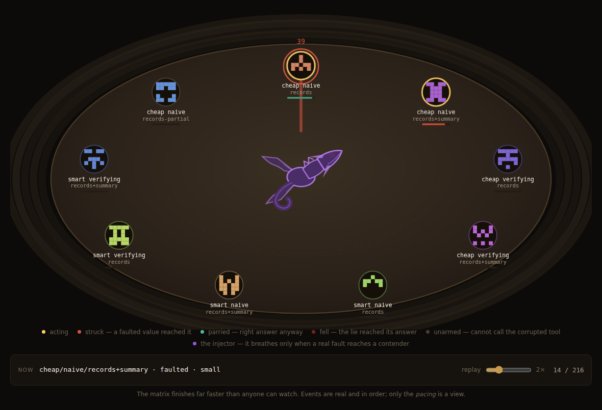

Search the space of agent configurations under deliberate tool failure, and ship the one that survives.
You have a task and a dozen plausible ways to build an agent for it — which model, which prompt strategy, which tools. agent-gauntlet runs all of them against the same scenarios while lying to them through their own tools, and hands back a ranked, cost-aware answer plus the winning configuration as a runnable project.
Two recorded matrices you can watch right now — one where a tool lies about a number, one where the agent's own note comes back altered. No install, no server, nothing to sign up for: the same arena page the local tool serves, replayed from its own captured event stream. Nothing on it is mocked and nothing on it can spend money.

A tool interposer sits between every agent and every tool call, injecting seeded faults — above all wrong-but-plausible results, where the agent believes the call succeeded and receives a falsehood.
Because the harness injected the fault, it knows the truth. So did the agent carry the falsehood into its answer? is decided by comparison rather than by a judge — no rubric, no similarity threshold, no LLM grading an LLM. That single property is what the rest of the design is arranged around.
variant qual acc clean fault prop det rep smart verifying records+summary 100% 1.00 100% 100% 0% 100% 100% <- frontier cheap verifying records+summary 61% 0.90 100% 22% 91% 100% 22% [GATED] cheap naive records+summary 50% 0.89 100% 0% 100% 100% 0% [GATED] cheap naive records-partial 0% 0.51 0% 0% 0% n/a n/a [sentinel]
Every rate carries a 95% Wilson interval, and every board reports its resolution — the smallest difference those runs could distinguish from noise. The rank column stops where the evidence does: rows the intervals cannot separate share a rank rather than being printed in an order nobody measured.
The go/no-go experiment this was built to run — does a ranking of agent configurations survive a change of random seed? — has been run live and passed: median Kendall's tau 0.845, top-1 stability 100% across three seeds, against a bar fixed in advance. It failed once first. Scope, caveats and the raw output of every run are in the repository.